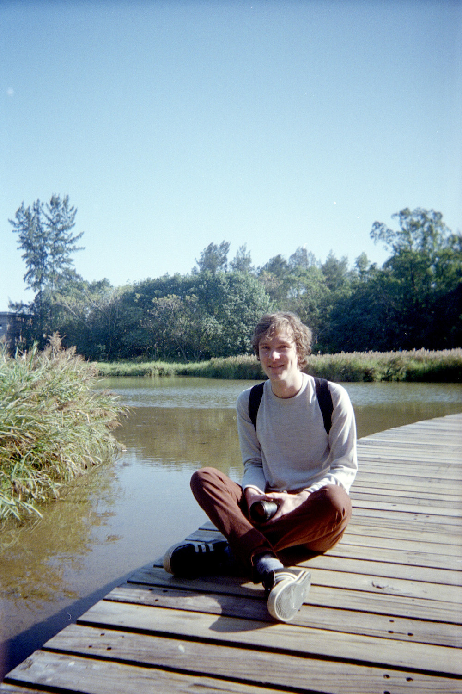

Alex Tomlinson
About & Contact
I explore the relationship between man-made light and nature through long exposure photography. Most of my work is done in Northeastern Pennsylvania.
Photo by Lisa
Email
CV
Instagram
Polyphony
Home